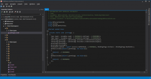

<!DOCTYPE html><html lang="ja-JP"><head><meta charset="utf-8"><meta name="X-UA-Compatible" content="IE=edge"><meta name="author" content="Core"><link rel="icon" href="/images/favicon.ico" type="image/x-icon"><title>.NETで難読化を試してみる 第4回 · A certain engineer "COMPLEX"</title><meta name="description" content="前回の続き。
ですが、前回は3年前です。なのに、皆さん難読化に興味があるのか、Blogの人気記事は難読化です。
今回はリフレクションとアゼンブリマージを使った場合の難読化について検証します。

Explanation前回は、ソースコードの実行結果が、難読化前後で変化しないこと、逆アセンブルした後、人"><meta name="keywords"><meta content="width=device-width, initial-scale=1.0, maximum-scale=1.0, user-scalable=0" name="viewport"><meta content="yes" name="apple-mobile-web-app-capable"><meta content="black" name="apple-mobile-web-app-status-bar-style"><meta content="telephone=no" name="format-detection"><meta name="renderer" content="webkit"><link rel="stylesheet" href="/css/style.css"><link rel="stylesheet" href="/css/blog_basic.css"><link rel="stylesheet" href="/css/font-awesome.min.css"><link rel="stylesheet" href="/css/blogcard.css"><link rel="alternate" type="application/atom+xml" title="ATOM 1.0" href="/atom.xml"><script src="/js/jquery.js"></script><meta name="generator" content="Hexo 5.1.0"></head><body><div class="sidebar animated fadeInDown"><div class="logo-title"><div class="title"><h3 title=""><a href="/">A certain engineer &quot;COMPLEX&quot;</a></h3><div class="description"><p>とある技術者の劣等感</p></div></div></div><ul class="social-links"><li><a target="_blank" rel="noopener" href="https://github.com/takuya-takeuchi"><i class="fa fa-github"></i></a></li><li><a target="_blank" rel="noopener" href="https://twitter.com/takuya_takeuchi"><i class="fa fa-twitter-square"></i></a></li><li><a target="_blank" rel="noopener" href="https://www.facebook.com/takuya.takeuchi.sns"><i class="fa fa-facebook-square"></i></a></li></ul><div class="footer"><div class="p"> <span>© 2020 </span><i class="fa fa-star"></i><span> Core</span></div><div class="by_farbox"><span>Powered by </span><a href="https://hexo.io/" target="_blank">Hexo </a><span> & </span><a href="https://github.com/mrcore/hexo-theme-Anatole-Core" target="_blank">Anatole-Core  </a></div></div></div><div class="main"><div class="page-top animated fadeInDown"><div class="search"><div class="text"><input placeholder="検索ワードを入力してください" id="search-text" onkeypress="javascript:search(event)"></div><div class="btn"><a><i class="fa fa-search"></i></a></div></div><div class="nav"><li><a href="/">ホーム</a></li><li><a href="/archives">アーカイブ</a></li><li><a href="/tags">タグ</a></li><li><a href="/about">自己紹介</a></li></div><div class="information"><div class="back_btn"><li><a class="fa fa-chevron-left" onclick="window.history.go(-1)"> </a></li></div></div></div><div class="autopagerize_page_element"><div class="content"><div class="post-page"><div class="post animated fadeInDown"><div class="post-title"><h3><a>.NETで難読化を試してみる 第4回</a></h3></div><div class="post-content"><p><a target="_blank" rel="noopener" href="https://taktak.jp/2012/05/24/139">前回</a>の続き。</p>
<p>ですが、前回は3年前です。<br>なのに、皆さん難読化に興味があるのか、Blogの人気記事は難読化です。</p>
<p>今回は<strong>リフレクション</strong>と<strong>アゼンブリマージ</strong>を使った場合の難読化について検証します。</p>
<a id="more"></a>
<h1 id="Explanation"><a href="#Explanation" class="headerlink" title="Explanation"></a>Explanation</h1><p>前回は、ソースコードの実行結果が、難読化前後で変化しないこと、逆アセンブルした後、人間が容易に理解できるようなソースコードではなくなっていたことを確認しました。<br>今回は、<strong>リフレクション</strong>と<strong>アゼンブリマージ</strong>がどう変化するのかを実際に見てみます。<br>サンプルソースは、**<a target="_blank" rel="noopener" href="https://github.com/takuya-takeuchi/Demo/tree/master/Obfuscation4">GitHub</a>** に置きました。</p>
<p>前回のように、できあがった exe (今回は <strong>Obfuscation4.exe</strong>) を <strong>Eazfuscator.NET</strong> の右側の緑の領域に、作成したプログラムをドラッグアンドドロップします。</p>
<h2 id="Reflection"><a href="#Reflection" class="headerlink" title="Reflection"></a>Reflection</h2><p>(1) 実行結果の検証</p>
<p><strong>Before</strong></p>
<p><a href="../../../../public/2015/12/1.png"></a></p>
<p><strong>After</strong></p>
<p><a href="../../../../public/2015/12/2.png"></a></p>
<p>(2) 逆コンパイラによるソースコード解析</p>
<p><a href="../../../../public/2015/12/3.png"></a></p>
<p>リフレクションは成功していることがわかります。</p>
<h2 id="Assembly-Merge"><a href="#Assembly-Merge" class="headerlink" title="Assembly Merge"></a>Assembly Merge</h2><p>ではアセンブリをマージしてみましょう。</p>
<p>次はできあがった exe と dll (<strong>Obfuscation4Lib.dll</strong>) を <strong>Eazfuscator.NET</strong> の右側の緑の領域に、作成したプログラムをドラッグアンドドロップします。<br>次にexeを実行すると…</p>
<p><a href="../../../../public/2015/12/4.png"></a></p>
<p>失敗します。<br>直感的に、複数のアセンブリを複数ドロップすることでマージできそうですが、それでは失敗します。<br>結論から言うと、Eazfuscator.NET はアセンブリマージの機能は対応していますが、一工夫必要です。</p>
<figure class="highlight csharp"><table><tr><td class="gutter"><pre><span class="line">1</span><br><span class="line">2</span><br><span class="line">3</span><br><span class="line">4</span><br><span class="line">5</span><br><span class="line">6</span><br><span class="line">7</span><br><span class="line">8</span><br><span class="line">9</span><br><span class="line">10</span><br><span class="line">11</span><br><span class="line">12</span><br><span class="line">13</span><br><span class="line">14</span><br><span class="line">15</span><br><span class="line">16</span><br><span class="line">17</span><br><span class="line">18</span><br><span class="line">19</span><br><span class="line">20</span><br><span class="line">21</span><br><span class="line">22</span><br><span class="line">23</span><br><span class="line">24</span><br><span class="line">25</span><br><span class="line">26</span><br><span class="line">27</span><br><span class="line">28</span><br><span class="line">29</span><br><span class="line">30</span><br><span class="line">31</span><br><span class="line">32</span><br><span class="line">33</span><br><span class="line">34</span><br><span class="line">35</span><br><span class="line">36</span><br><span class="line">37</span><br><span class="line">38</span><br></pre></td><td class="code"><pre><span class="line"><span class="keyword">using</span> System.Reflection;</span><br><span class="line"><span class="keyword">using</span> System.Runtime.CompilerServices;</span><br><span class="line"><span class="keyword">using</span> System.Runtime.InteropServices;</span><br><span class="line"></span><br><span class="line"><span class="comment">// アセンブリに関する一般情報は以下の属性セットをとおして制御されます。</span></span><br><span class="line"><span class="comment">// アセンブリに関連付けられている情報を変更するには、</span></span><br><span class="line"><span class="comment">// これらの属性値を変更してください。</span></span><br><span class="line">[<span class="meta">assembly: AssemblyTitle(<span class="meta-string">&quot;Obfuscation4&quot;</span>)</span>]</span><br><span class="line">[<span class="meta">assembly: AssemblyDescription(<span class="meta-string">&quot;&quot;</span>)</span>]</span><br><span class="line">[<span class="meta">assembly: AssemblyConfiguration(<span class="meta-string">&quot;&quot;</span>)</span>]</span><br><span class="line">[<span class="meta">assembly: AssemblyCompany(<span class="meta-string">&quot;&quot;</span>)</span>]</span><br><span class="line">[<span class="meta">assembly: AssemblyProduct(<span class="meta-string">&quot;Obfuscation4&quot;</span>)</span>]</span><br><span class="line">[<span class="meta">assembly: AssemblyCopyright(<span class="meta-string">&quot;Copyright ©  2015&quot;</span>)</span>]</span><br><span class="line">[<span class="meta">assembly: AssemblyTrademark(<span class="meta-string">&quot;&quot;</span>)</span>]</span><br><span class="line">[<span class="meta">assembly: AssemblyCulture(<span class="meta-string">&quot;&quot;</span>)</span>]</span><br><span class="line"></span><br><span class="line"><span class="comment">// ComVisible を false に設定すると、その型はこのアセンブリ内で COM コンポーネントから</span></span><br><span class="line"><span class="comment">// 参照不可能になります。COM からこのアセンブリ内の型にアクセスする場合は、</span></span><br><span class="line"><span class="comment">// その型の ComVisible 属性を true に設定してください。</span></span><br><span class="line">[<span class="meta">assembly: ComVisible(false)</span>]</span><br><span class="line"></span><br><span class="line"><span class="comment">// 次の GUID は、このプロジェクトが COM に公開される場合の、typelib の ID です</span></span><br><span class="line">[<span class="meta">assembly: Guid(<span class="meta-string">&quot;386f10d7-d505-4caf-9d63-98ef058b1088&quot;</span>)</span>]</span><br><span class="line"></span><br><span class="line">[<span class="meta">assembly: Obfuscation(Feature = <span class="meta-string">&quot;merge with Obfuscation4Lib.dll&quot;</span>, Exclude = false)</span>]</span><br><span class="line"></span><br><span class="line"><span class="comment">// アセンブリのバージョン情報は、以下の 4 つの値で構成されています:</span></span><br><span class="line"><span class="comment">//</span></span><br><span class="line"><span class="comment">//      Major Version</span></span><br><span class="line"><span class="comment">//      Minor Version</span></span><br><span class="line"><span class="comment">//      Build Number</span></span><br><span class="line"><span class="comment">//      Revision</span></span><br><span class="line"><span class="comment">//</span></span><br><span class="line"><span class="comment">// すべての値を指定するか、下のように &#x27;*&#x27; を使ってビルドおよびリビジョン番号を</span></span><br><span class="line"><span class="comment">// 既定値にすることができます:</span></span><br><span class="line"><span class="comment">// [assembly: AssemblyVersion(&quot;1.0.*&quot;)]</span></span><br><span class="line">[<span class="meta">assembly: AssemblyVersion(<span class="meta-string">&quot;1.0.0.0&quot;</span>)</span>]</span><br><span class="line">[<span class="meta">assembly: AssemblyFileVersion(<span class="meta-string">&quot;1.0.0.0&quot;</span>)</span>]</span><br></pre></td></tr></table></figure>

<p>上記コードの中央下の <strong>[assembly: Obfuscation(Feature = “merge with Obfuscation4Lib.dll”, Exclude = false)]</strong> によってマージするアセンブリを指定できます。</p>
<p>その後、exe だけを再びドラッグアンドドロップして難読化を実行します。<br>さらに、アセンブリがマージされたことを確認するため、exe だけを別の場所に配置して実行すると上手く<strong>いきません</strong>。</p>
<figure class="highlight plain"><table><tr><td class="gutter"><pre><span class="line">1</span><br><span class="line">2</span><br><span class="line">3</span><br><span class="line">4</span><br><span class="line">5</span><br><span class="line">6</span><br><span class="line">7</span><br></pre></td><td class="code"><pre><span class="line">ハンドルされていない例外: System.IO.FileNotFoundException: ファイルまたはアセンブリ &#39;Obfuscation4Lib&#39;、またはその依存関係の 1 つが読み込めませんでした。指定されたファイルが見つかりません。</span><br><span class="line">場所 System.Reflection.RuntimeAssembly._nLoad(AssemblyName fileName, String codeBase, Evidence assemblySecurity, RuntimeAssembly locationHint, StackCrawlMark&amp; stackMark, IntPtr pPrivHostBinder, Boolean throwOnFileNotFound, Boolean forIntrospection, Boolean suppressSecurityChecks)</span><br><span class="line">場所 System.Reflection.RuntimeAssembly.InternalLoadAssemblyName(AssemblyNameassemblyRef, Evidence assemblySecurity, RuntimeAssembly reqAssembly, StackCrawlMark&amp; stackMark, IntPtr pPrivHostBinder, Boolean throwOnFileNotFound, Boolean forIntrospection, Boolean suppressSecurityChecks)</span><br><span class="line">場所 System.Reflection.RuntimeAssembly.InternalLoad(String assemblyString, Evidence assemblySecurity, StackCrawlMark&amp; stackMark, IntPtr pPrivHostBinder, Boolean forIntrospection)</span><br><span class="line">場所 System.Reflection.RuntimeAssembly.InternalLoad(String assemblyString, Evidence assemblySecurity, StackCrawlMark&amp; stackMark, Boolean forIntrospection)</span><br><span class="line">場所 System.Reflection.Assembly.Load(String assemblyString)</span><br><span class="line">場所 .(String[] )</span><br></pre></td></tr></table></figure>

<p><strong>(゜Д゜) ハア??</strong></p>
<p>という落とし穴があります。<br>どうも、Mergeには副作用があるようで、難読化等が失敗することがあるようです。<br>これはヘルプファイルに記載してあります。</p>
<blockquote>
<p>Usage of assemblies merging may lead to some side effects which may make obfuscation fail. If such is the case then use the principle of the least common denominator – merge just those assemblies which do not cause obfuscation failure.<br>Assemblies embedding can be used in conjunction or as an alternative to assemblies merging.</p>
</blockquote>
<p>訳) アセンブリマージの使用は難読化の失敗させるかもしれない副作用を引き起こすかもしれません。そのようなケースでは、最小公倍数の原理-難読化失敗を引き起こさないアセンブリだけマージします。<br>アセンブリの埋め込みは結合に使うことができ、またはアセンブリマージの代用にすることができます。</p>
<p>そのため、</p>
<figure class="highlight diff"><table><tr><td class="gutter"><pre><span class="line">1</span><br><span class="line">2</span><br></pre></td><td class="code"><pre><span class="line"><span class="deletion">- [assembly: Obfuscation(Feature = &quot;merge with Obfuscation4Lib.dll&quot;, Exclude = false)]</span></span><br><span class="line"><span class="addition">+ [assembly: Obfuscation(Feature = &quot;embed Obfuscation4Lib.dll&quot;, Exclude = false)]</span></span><br></pre></td></tr></table></figure>

<p>のように変更します。<br>その後に、ビルド、exeのドラッグアンドドロップ実行、exeの隔離、実行をすると、今度こそ成功します。</p>
<p>ですが、先ほどと同じように <strong>JetBrains dotPeek</strong> で逆コンパイルして確認すると、参照アセンブリにObfuscation4Lib.dllが含まれたままです。</p>
<p><a href="../../../../public/2015/12/5.png"></a></p>
<p>なのに、exeを隔離して実行しても上手くいくのは、単純にdotPeekが上手く処理できていないだけなのでしょうか？<br>ただ、思うところはあります。<br>アセンブリをマージしているのに、 <strong>Assembly.Load</strong>でマージ(埋め込み)対象のアセンブリを読み込もうとしているのを認識しているのでしょうか？<br>何はともあれ、参照済みのアセンブリをわざわざリフレクションでアセンブリをロードするのはやめた方が良いようです。イレギュラーでしょうし。</p>
<p>理由はこれ以上深く追求できませんしませんが、この問題を克服した結果をお見せします。</p>
</div><div class="post-footer"><div class="meta"><div class="info"><i class="fa fa-sun-o"></i><span class="date">2015-12-19</span><i class="fa fa-tag"></i><a class="tag" href="/categories/Microsoft/" title="Microsoft">Microsoft </a><a class="tag" href="/categories/Microsoft/NET-Framework/" title=".NET Framework">.NET Framework </a><a class="tag" href="/categories/Microsoft/NET-Framework/C/" title="C#">C# </a><a class="tag" href="/categories/net-framework/" title="net-framework">net-framework </a><a class="tag" href="/categories/netで○○○を試してみる/" title="netで○○○を試してみる">netで○○○を試してみる </a><a class="tag" href="/categories/net-framework/NETで○○○を試してみる/" title=".NETで○○○を試してみる">.NETで○○○を試してみる </a><a class="tag" href="/categories/net-framework/NETで○○○を試してみる/難読化/" title="難読化">難読化 </a><a class="tag" href="/categories/netで○○○を試してみる/NETで難読化を試してみる/" title=".NETで難読化を試してみる">.NETで難読化を試してみる </a><span class="leancloud_visitors"></span></div></div></div></div><div class="share"><div class="evernote"><a class="fa fa-bookmark" href="" onclick="javascript:join_favorite()" ref="sidebar"></a></div><div class="twitter"><a class="fa fa-twitter" target="_blank" rel="noopener" href="http://twitter.com/home?status=,https://takuya-takeuchi.github.io/2015/12/19/537/,A certain engineer &quot;COMPLEX&quot;,.NETで難読化を試してみる 第4回,;"></a></div></div><div class="pagination"><ul class="clearfix"><li class="pre pagbuttons"><a class="btn" role="navigation" href="/2015/12/19/560/" title=".NETで難読化を試してみる 第5回">前へ</a></li><li class="next pagbuttons"><a class="btn" role="navigation" href="/2015/12/17/533/" title="サテライトアセンブリが反映されないとき">次へ</a></li></ul></div></div></div></div></div><script src="/js/jquery-migrate-1.2.1.min.js"></script><script src="/js/jquery.appear.js"></script><script src="/js/add-bookmark.js"></script><script src="/js/search.js"></script></body></html>